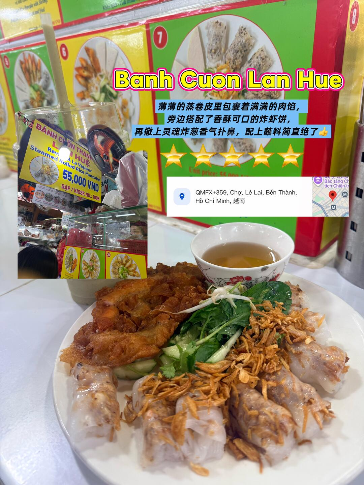
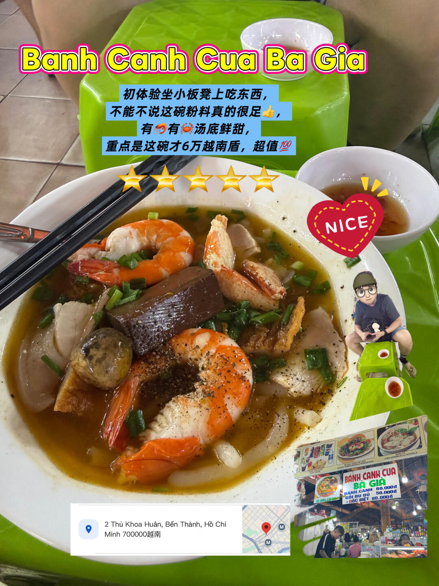

← 返回每日行程
市場 · 第一郡
濱城市場 Bến Thành Market
Day 4 · 市場採買 + 兩個必吃攤位

地址Lê Lợi, Bến Thành, Quận 1（南門 Thủ Khoa Huân 有鐘樓）
室內市場約 06:00–18:00
夜市約 18:00–22:00
建議停留60–90 分鐘
位置第一郡市中心，旁邊就是 Ben Thanh 地鐵站
📍 逛法建議：從南門（Thủ Khoa Huân 街）進去，鐘樓是最好認的地標。
市場分區大致是：外圈生鮮與熟食攤、中段乾貨與咖啡、內圈紀念品與布料。
兩個必吃攤位都在市場內，以下分開介紹。
🛍️ 市場裡買什麼
- 咖啡豆與器具：越南咖啡是這裡的主力，可以現場試喝，記得比價
- 乾貨與腰果：腰果、果乾、魚露，攤位集中在中段
- 紀念品與布料：內圈，可以殺價（開價約對半開始談）
- 熟食攤：外圈，早上到中午最熱鬧，兩個必吃攤都在這一帶
🥢 接下來是市場裡的兩個必吃攤位——它們不屬於獨立行程，是在濱城市場裡面要吃的東西，
所以放在這一頁介紹。兩攤都約 60,000 VND，加起來剛好一餐。

① 蒸卷粉｜Lan Hue Banh Cuon
Kiosk No. 1006 · 濱城市場內
價格60,000 VND
營業04:00–17:00
評分⭐ 4.7（72 則）
電話028 3520 1843
位置Lê Lai 側，攤號 1006
⭐⭐⭐⭐⭐ 薄薄的蒸卷皮包裹滿滿肉餡，配香酥炸蝦餅，撒上靈魂炸蔥香氣撲鼻，配蘸料絕了！

② 蟹肉粉攤｜Banh Canh Cua Bà Già
濱城市場內 · 2 Thủ Khoa Huân 側
價格60,000 VND（約 18 元人民幣）
營業依市場營業時間
評分⭐ 4.5（47 則）
位置Thủ Khoa Huân 側（南門一帶）
⭐⭐⭐⭐⭐ 湯頭濃郁鮮美，料給得超足（大蝦、蟹肉、豬血），這個價格吃到這麼實惠的海鮮粉太划算了！第一次體驗「坐小板凳吃粉」的接地氣氛圍 😆
✅ 兩攤怎麼安排
- 兩攤都在市場內，走路 1–2 分鐘，可以一攤吃一樣
- 蒸卷粉 04:00–17:00：行程排在 16:00 到的話還在營業，但接近收攤，早一點比較保險
- 蟹肉粉依市場時間，通常到傍晚
- 兩攤合計約 120,000 VND（≈ 每人一餐）
- 座位是市場小板凳，內用為主，可以先看別人怎麼點
- 建議先逛一圈再決定吃哪攤，市場攤位有時會換位置，認攤號或招牌比較準
📌 資料來源：攤位價格、評分、營業時間與評語來自小紅書實地帖文（2026-10 擷取）；
市場營業時間為一般資訊，出發前建議以現場公告為準。